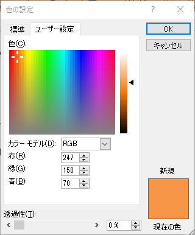
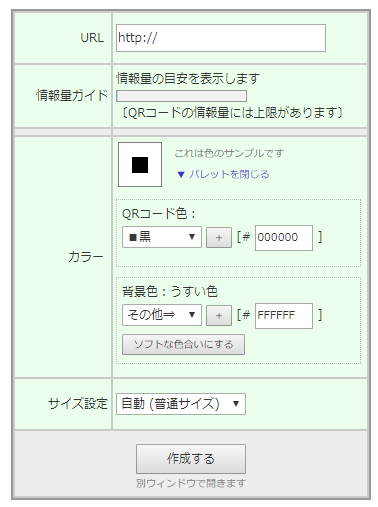

RGB濃度からカラーコードへ変換したわけ
どうしてRGB濃度を表す３つの数値からカラーコードへ変換したかについて解説します。

彼がPowerPointの色指定ウィンドウです。ご覧のとおり、RGBの濃度で指定する方式です。
もう一つ、HSLという形式も使えますが、これは今回はあってもなくても同じなので実質ないものとします。
さて、お次はQRのススメの色指定欄ですが...

おっと？これはカラーコードですね。
こんな感じで、このままだと色指定値をそのまま移動できない事態に陥りました。
私は特別プロでもないので変換法を覚えておらず、情報の海にスクランブル発進。
そして見つけたのが、こちらのサイト。
RGB濃度からカラーコードへ変換してくれるんです！とっても便利！
こうして、私は「QRコードの背景色と周りの色が違う」というとってもダサい事態を回避したわけです...
戻る